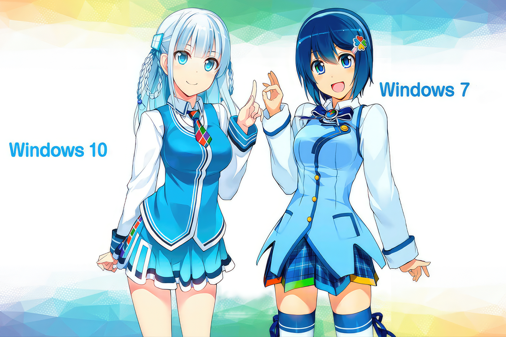

A Windows és a Linux két népszerű operációs rendszer, amelyeket széles körben használnak otthoni és üzleti számítógépekre. Mindkét rendszernek megvannak a maga előnyei és hátrányai, ezért fontos, hogy alaposan megismerjük őket, mielőtt döntést hoznánk arról, hogy melyik rendszert telepítsük.
Choice
-

Windows
A Windows a Microsoft által fejlesztett és forgalmazott operációs rendszer.
A Windows a Microsoft által fejlesztett és forgalmazott operációs rendszer.
-
Linux
A Linux egy nyílt forráskódú operációs rendszer, amelyet a Linux kernelre építettek.
A Linux egy nyílt forráskódú operációs rendszer, amelyet a Linux kernelre építettek.